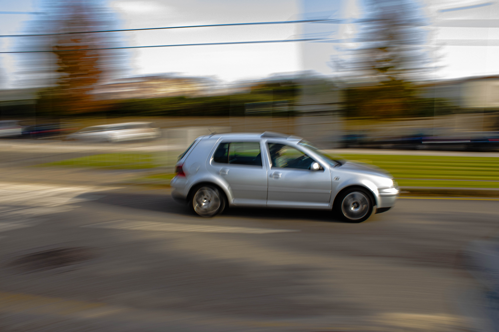
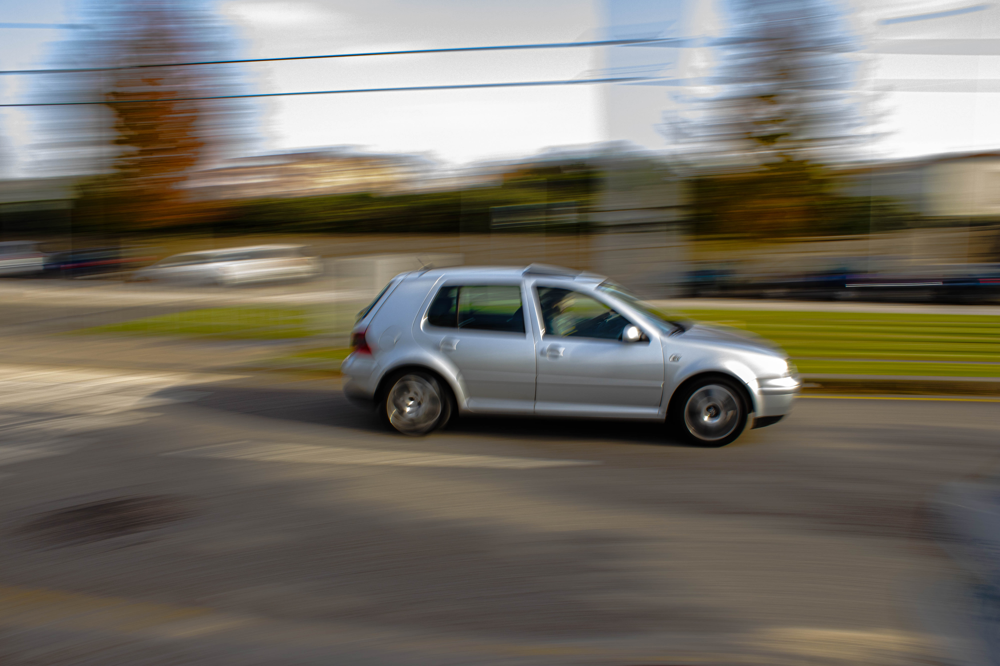

Sobre Mim
Nos meus tempos livres para além de gostar de estar com amigos e de jogar à bola tenho duas grandes paixões que são a fotografia e a música.
A fotografia tornou-se uma paixão,para mim, pois acho incrível ,que com um simples clique no botão de uma máquina,podemos registrar momentos que ficaram para sempre e isso é algo que me fascina muito. Se clicares na câmera fotográfica em baixo, terás acesso a algumas fotos que tirei.
Tenho como género músical favorito o rap,pois gosto das batidas,das rimas, do ritmo usado, da forma como se pode utilizar a música para contar uma história ou para usar como forma de intervenção crítica sobre algo. No ícone da coluna,ao clicar no mesmo,verás alguns dos meus artistas favoritos!
 
